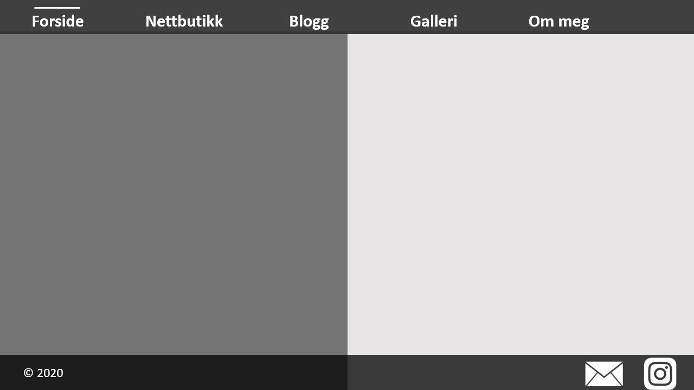
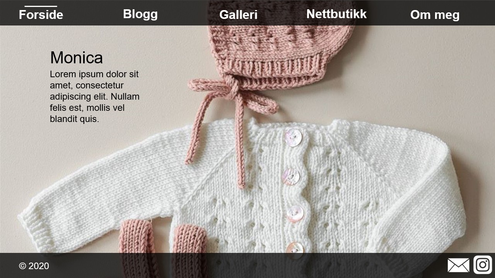
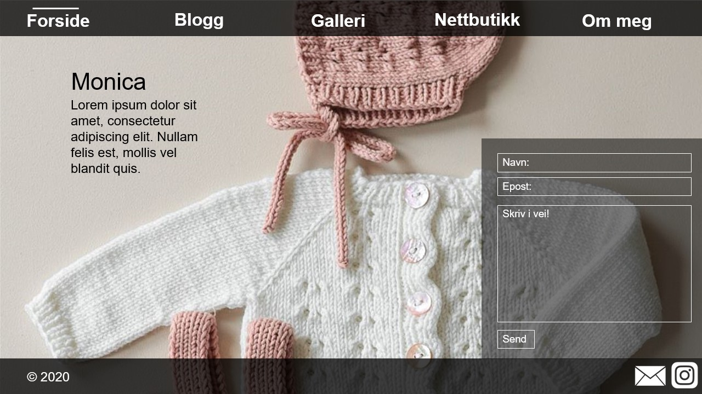
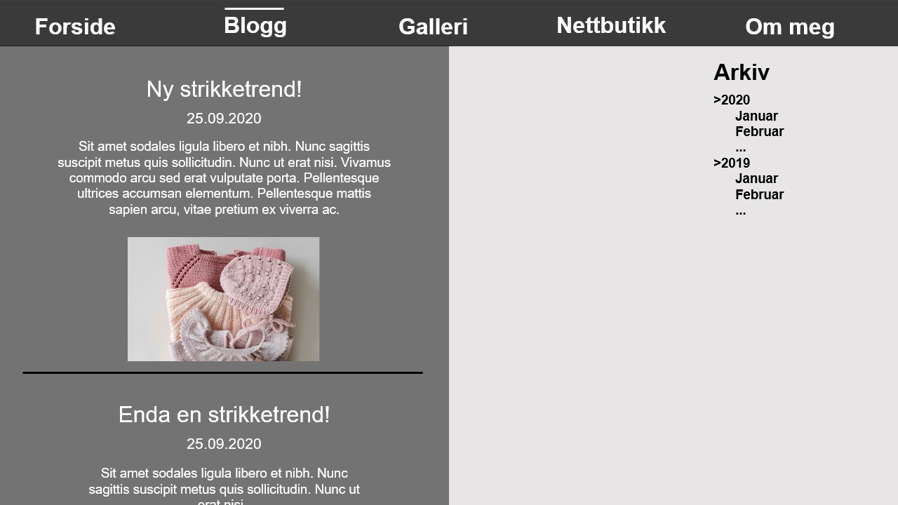
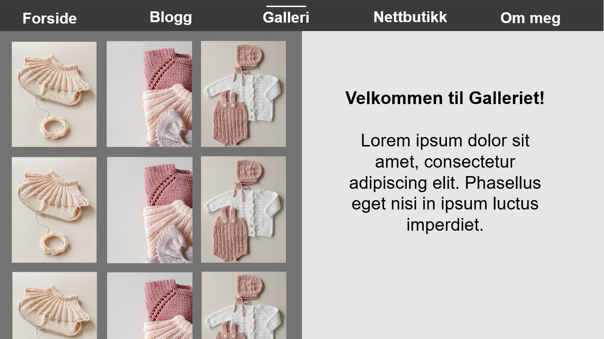
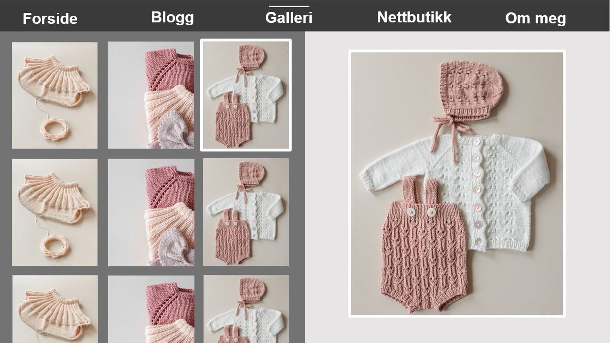
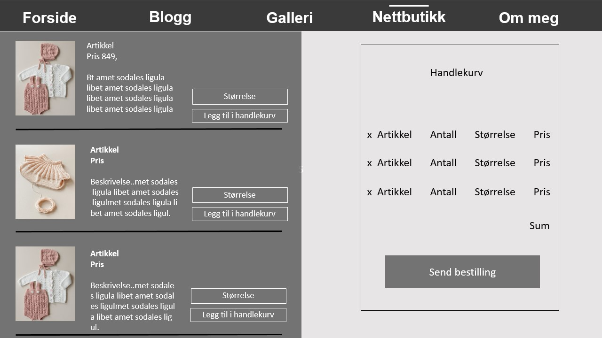
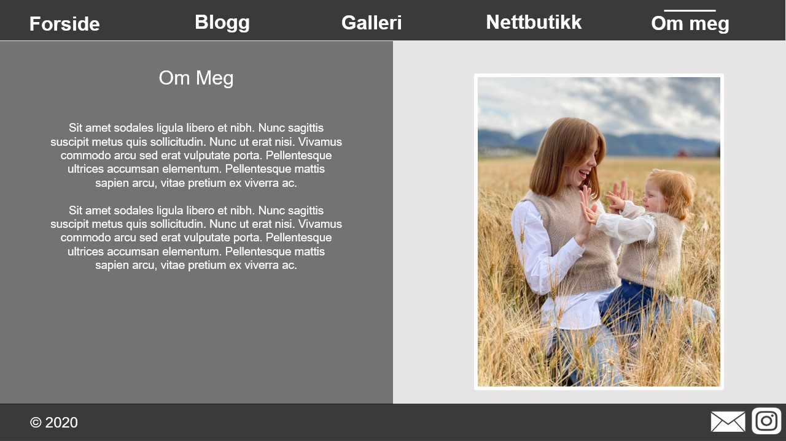

Alexander Brandhaug, Eirik Andre Nordbø, Ida Matre, Tim Matras og Sofie Rønningen Kleven
03.10.2020
Administrative detaljer
Klientens navn er Monica og hun er en selvstendig strikker.
Nettsidens hensikt, mål og målgruppe
Nettsiden skal fungere som et kreativt utløp for klienten hvor hun kan fortelle og inspirere andre gjennom
hennes nyeste strikkeverk, samtidig som hun kan ta vare på strikke-prosjekter gjennomført til hennes datter.
Dermed blir et naturlig mål for nettsiden å kunne fremheve bilder og hennes kunstverk gjennom både en blogg
og et galleri. Nettsiden skal også
kort informere om klientens bakgrunn gjennom en om-meg side. Videre vil nettsiden fungere som en
sekundærinntekt for klienten via
en nettbutikk hvor besøkende kan bestille strikkede artikler. Klienten ønsker også å dirigere trafikk til
hennes egen Instagram-konto.
Navigasjonsstruktur
Vi har valgt å strukturere nettsiden slik at det er mulig å komme til hver enkelt side med ett klikk, slik
det er vist i figuren nedenfor. Nettsiden skal ha en navigasjonsbar som alltid kommer til å tillate
den
besøkende å bytte over til en annen side. Dette gjør vi for at den besøkende enkelt skal kunne navigere seg
rundt på nettsiden og slik at vi har en struktur på nettsiden som er enkelt å forholde seg til. Vi tror også
at denne strukturen vil passe best med tanke på den brede aldersgruppen i målgruppen vår.
Alle HTML-filene er koblet sammen slik.
Nettsidens layout og utseende
Det gjennomgående designet vil være enkelt og minimalistisk. Dette valget er tatt på bakgrunn av at vi
ønsker at bildene av strikkeprosjektene skal være i fokus. Vi vil ha ett felles css-dokument for det
generelle designet for alle websidene.
Hver side vil ha det samme fargevalget. Bakgrunnsfargen er delt i to, med en mørk gråfarge til venstre og en
lys gråfarge til høyre. Det er fordi mye av innholdet vårt er naturlig å dele i to, og en todelt
bakgrunnsfarge vil tydeliggjøre dette. Tekstfargen på den mørkegrå siden vil være hvit mens tekstfargen på
den lysegrå siden vil være mørk grå.
Footer: Trebuchet MS, Helvetica, sans-serif, 8-10 pt.
Fargevalg:
Bakgrunnsfarge: mørk grå til venstre og lys grå til høyre.
Navigasjonsbar og footer: mørk grå og noe gjennomsiktig.
Tekst: Hvit til venstre og mørk grå til høyre. Hvit på navigasjonsbare og footer.
Border: Hvit til venstre og mørk grå til høyre.
Hver side vil ha en navigasjonsbar på toppen av siden som inneholder direkte link til forsiden, nettbutikken,
bloggen, galleriet og om meg. Denne funksjonaliteten vil sørge for at brukeren kun trenger ett trykk for å
komme til en annen side av nettsiden. Navigasjonsbaren vil være mørk grå og noe gjennomsiktig. Teksten vil
være hvit, og ordene skal være jevnt fordelt utover navigasjonsbaren.
Hver side vil ha en footer som er plassert nederst på siden (når man scroller helt ned). Den vil ha samme
farge som navigasjonsbaren, mørk grå og noe gjennomsiktig, med hvit tekst. På footeren vil årstall og
copyright-ikonet være plassert til venstre. Til høyre er det et mail-ikon og instagram-ikon. Instagram-ikon
tar brukeren til Monicas instagramprofil. Mail-ikonet åpner et “kontakt-meg”-form.
Sidene skal være responsive.

Standard layout for sidene.
Innhold
Forsideforside.html
Forsiden vil være den første siden gjester ser når de besøker nettsiden.
En av målene med forsiden er å fremheve hva besøkende kan forvente av nettsiden. Samtidig ønsker vi
å ha
et bakgrunnsbilde med en slik størrelse at den dekker hele nettleservinduet. Derfor er det viktig
med et
bakgrunnsbilde som klart fremhever strikking til jentebarn. Valg av bildet landet derfor på noe som
viste frem strikkede artikler til barn. Dette bildet inneholder en del tomrom slik at fremsiden blir
luftigere. For å underbygge hva en besøkende kan forvente av nettsiden, skal det være en setning
plassert i øvre venstre del av siden som kort forteller hva denne nettsiden omhandler. Denne
plasseringen nær øvre venstre hjørne er tenkt å raskere fange blikket til besøkende da de typisk
først
fester blikket i øvre venstre hjørne.
Forsiden vil ha et unikt design i form av at det skal være et heldekkende bakgrunnsbilde.

Mockup for Forside - Standard.

Mockup for Forside - Etter trykk på kontaktikonet.
Bloggblogg.html
Bloggen skal, likt som de andre sidene, kunne nås med et klikk fra forsiden. Her skal Monica kunne
legge
ut blogginnlegg med bilder, feks strikkeoppskrifter eller inspirasjon til prosjekter. Footer og
header
vil være lik som på alle de andre sidene. Til venstre vil de forskjellige blogginnleggende komme,
sortert fra nyest på toppen til eldst nederst. Alle innleggene vil være lagt i en egen div som vil
bli
stylet likt. Ved scrolling vil kun venstre delen av nettsiden scrolles. Til høyre vil brukeren få
tilgang til bloggarkivet. Ved å trykke på årstallene vil det komme opp en dropdown-meny slik at
brukeren
kan velge måned. For å vise brukeren at dette er mulig vil vi ha en pil bort på årstallet som
skifter
til en pil ned i det brukeren har trykket på årstallet og får drop-down menyen tilgjengelig.

Mockup for Blogg.
Gallerigalleri.html
Denne siden har som formål å ta vare på strikkeprosjekter til klienten gjennom bilder i et galleri og
samtidig inspirere andre strikkeglade besøkende.
Galleriet er delt inn i to halvdeler; en venstre og en høyre halvdel. Bildene i venstre halvdel skal
være av en slik størrelse at det er plass til tre bilder i bredden også med noe tomrom rundt hvert
bilde. Det skal være mulig å scrolle nedover denne halvsiden for å se flere bilder. Ved et museklikk
på et av bildene, skal det respektive bildet få en hvit kant rundt seg og fremheves i større format
i høyre halvdel. Det fremhevede bildet i høyre halvdel skal også ha en hvit kant rundt seg, slik at
besøkende enkelt ser hvilket bildet som fremheves fra galleriet.
Ved første besøk på gallerisiden, før besøkende trykker på et bilde, skal høyre halvdel bare
inneholde en kort tekst fra klienten som forklarer formålet med gallerisiden.

Mockup for Galleri - Før klikk

Mockup for Galleri - Etter klikk
Nettbutikknettbutikk.html
Nettbutikken vil bestå av flere artikler i
mindre bilder under hverandre som skilles av en svart-linje som ligger horisontalt under hvert
bilde. Ved å klikke på bildene vil bildet forstørres på en måte som bevarer bildekvaliteten, og lar
brukeren se gitt artikkel godt nok til å kunne gjøre et informativ valg om å kjøpe. Dette vil bidra
til å gjøre nettsiden responsiv og brukervennlig, uten å la bruker vente på at siden laster da
bildene vi lastes inn forminsket. Ved siden av bildene vil det være en kort informativ tekst om
hvilket materialet som er brukt, og en drop down meny hvor størrelse kan velges av bruker. Pris vil
også fremkomme ved hver artikkel. Det vil også være en knapp som lar bruker legge produktet til i en
handlevogn. Handlevognen vil komme på høyre side av nettbutikken. Her vil pris kalkuleres når
produkt legges i handlevognen, og en total oversikt over antall varer vises. Bruker vil også ha
muligheten til å fjerne varer. Både drop down menyen og handlekurven vil bli implementert ved hjelp
av Javascript. Skrift størrelse og type vil være den samme som er brukt på de andre sidene.

Mockup for Nettbutikk.
Om megom_meg.html
Denne siden skal kort forklare brukeren hvem avsenderen av nettsiden er, i dette tilfellet er det
strikkeglade Monica. Siden vil ha samme gjennomgående layout som resten av sidene. Til venstre vil
det stå en kort tekst om Monica som lar brukeren bli litt kjent med henne. Til høyre vil det være et
stort bilde av Monica med hvit ramme rundt. Footer og header oppfører seg likt som på alle de andre
sidene. Dette er en ganske statisk side og vil ikke trenge noe selvstendig skript.

Mockup for Om meg.
Minstekrav
Navigasjonsbar: En meny på toppen av siden som vil få brukeren til hvilken som helst side med kun ett
trykk.
Navigasjonsbaren skal være tilstede på alle sidene.
Footer: Copyright-symbol og “2020” til venstre. Instagram-symbol og epost-ikon nederst til venstre.
Gjør det
mulig å finne instagramprofilen til Monica og ta kontakt via epost. Footeren skal være plassert nederst på
siden.
Epost-form: Kontaktskjema hvor brukeren kan skrive en mail direkte til Monica. Skjemaet vil bestå av
et
felt for
navn, et felt for epost-adresse, et felt for melding og en knapp for å trykke “send”.
Nettbutikk: Funksjonalitet for å bestille artikler. Artiklene man kan kjøpe vil vises til venstre. Man
velger
størrelse og antall ved hjelp av dropdown-menyer for hver artikkel. Når artikkelen velges legges automatisk
artikkelen i handlekurven på høyre side. Handlekurven vil oppsummere artikkelnavn, antall, størrelse og
pris.
Nederst er det en knapp for å sende bestillingen.
Bildegalleri: Flere små bilder til venstre (3 bilder i bredden). Ved å trykke på ett bilde til
venstre kommer det opp som et stort bilde til høyre.
Bloggarkiv: Ved å trykke på årstall vil månedene dukke opp under, som en arkivmeny.
Plan
Alle filene kommer til å bli plassert i en mappe kalt strikke_monica. Fil-hierarkiet vårt kommer til å
se slik ut:
CSS
blogg.css
forside.css
galleri.css
main.css
nettbutikk.css
om_meg.css
images
image1.png
image2.jpg
...
JS
blogg_arkiv.js
email_form.js
galleri.js
navbar_footer.js
nettbutikk.js
blogg.html
forside.html
galleri.html
nettbutikk.html
om_meg.html
Arbeidsoppgavene har blitt delt opp slik at hver enkelt person er hovedansvarlig for hver sin HTML-fil og
dens korresponderende CSS og JavaScript-fil. Videre skal alle samarbeide på main.css og
navbar_and_footer.js fordi dette skal gjenbrukes på alle sidene. Vi har også bestemt oss for å sette
opp
flere personer på noen av filene for å fordele arbeidsmengden noenlunde likt ettersom noen filer kan kreve
mer arbeid enn andre. Planen er at vi skal være ferdige med nettsiden den 27.10 slik at vi har en uke på å
teste ut nettsiden og rette opp i eventuelle bugs eller annet.
Fil
Beskrivelse
Ansvarlig
Deadline
main.css
Overordnet styling for siden
Alle
27.10.20
forside.css
Forside
Eirik
27.10.20
blogg.css
Blogg
Tim, Alex
27.10.20
nettbutikk.css
Nettbutikk
Sofie
27.10.20
om_meg.css
Om meg
Ida, Alex
27.10.20
galleri.css
Galleri
Ida
27.10.20
blogg_arkiv.js
Arkiv-meny
Tim, Alex
27.10.20
email_form.js
"Kontakt-meg-på-epost"-form
Alex
27.10.20
galleri.js
Bildegallerifunksjon
Ida, Tim
27.10.20
navbar_and_footer.js
Navbar på toppen og footer på bunnen.
Alle
27.10.20
nettbutikk.js
Funksjonalitet i nettbutikk. Størrelse- og antall-dropdown. Bestillingsoversikt.
Sofie, Eirik, Alex
27.10.20
forside.html
Forside
Eirik
27.10.20
blogg.html
Blogg
Tim
27.10.20
galleri.html
Galleri
Ida
27.10.20
nettbutikk.html
Nettbutikk
Sofie
27.10.20
om_meg.html
Informasjon om klienten
Alex
27.10.20
Testing
Fikse bugs og teste koden. Sjekke hvor responsiv siden er.